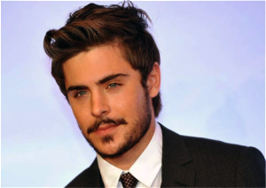
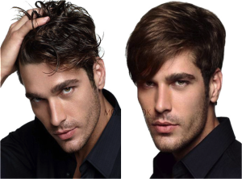

Estilos para hombres.
A través de tu imagen, las personas se pueden hacer una idea de como eres, de tu nivel cultural y social, del grado de confianza que inspiras. Por ello muchos clientes vienen a nosotros buscando un ideal de belleza que transmita esa imagen que buscan, bien sea reputación, una imagen cercana, estilo moderno.
Para poder aconsejar bien a un hombre, necesitamos conocer su rostro. Los rostros masculinos se pueden dividir en dos grandes grupos:
- Los redondeados y cuadrados
- Los ovalados y alargados
Rostro masculino redondeado y cuadrado
El largo y el ancho del rostro son similares. Tu objetivo en este caso es alargar y estrechar el rostro.
Consejo:
Los laterales cortos y pulidos o bien rasurados, y llevar en la parte superior el pelo mas largo para dar mayor longitud al rostro. En melenas cortas es mejor llevar peinados escalados y dejar los laterales mas cortos.
PATILLAS
Las patillas largas alargan y estrechan el rostro.
BIGOTE
BARBA
La barba completa acorta y da volumen al rostro, la perilla en cambio alarga el rostro.
Rrostro ovalado y alargadoostro masculino ovalado y alargado
Es más largo que ancho, y la línea de la mandíbula es suavemente sinuosa.
Consejo:
A este tipo de rostro le quedan bien todos los cortes y peinados, solo tiene que decidir que parte de su rostro quiere potenciar.
BIGOTE
BARBA
La barba completa, que ocupa toda la zona inferior, acorta el rostro. Evita llevar la perilla larga.
Video